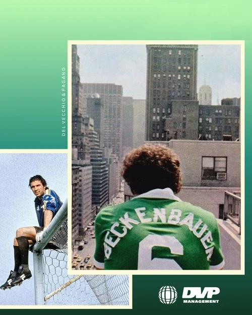

Una dirección de marca
Definir cómo expresar tu identidad y tus valores para mantener una presencia reconocible.
DVP Publicity trabaja la marca personal del futbolista y las oportunidades comerciales vinculadas con su imagen. Reúne estrategia de identidad, redes y contenidos, gestión de patrocinios y coordinación de campañas. El objetivo es que lo que comunicas fuera del campo sea coherente con quién eres y con la carrera que construyes.
Hablar de DVP Publicity ↗
La marca personal no se limita a publicar una fotografía o a acumular anuncios. Primero hay que definir qué te distingue y cómo quieres comunicarlo. Después, esa identidad debe mantenerse en los contenidos y en las colaboraciones que se valoran.
Una campaña es una oportunidad concreta, no una obligación de aceptar cualquier marca. DVP Publicity busca y gestiona acuerdos compatibles con tu perfil y tus objetivos, y coordina las participaciones y piezas que se acuerdan. Los alcances comerciales se definen por proyecto.
Este trabajo se conecta con tu carrera, pero tiene un alcance distinto de la representación deportiva. Los ingresos posibles de una colaboración tampoco sustituyen un plan patrimonial: esa conversación pertenece a Wealth Consulting.
Definir cómo expresar tu identidad y tus valores para mantener una presencia reconocible.
Trabajar publicaciones y materiales que respondan a esa dirección, dentro del servicio acordado.
Buscar y gestionar patrocinios, campañas y participaciones que tengan sentido para tu perfil.
No. Las redes y los contenidos son una parte. También incluye el trabajo de marca personal y la búsqueda y gestión de patrocinios y campañas.
No. Dependen de oportunidades, compatibilidad de perfiles y acuerdos concretos. El servicio no promete una cantidad de campañas ni ingresos determinados.
Es un módulo opcional con cotización independiente. El alcance de marca, contenidos o campañas se define para el caso concreto antes de activarlo.